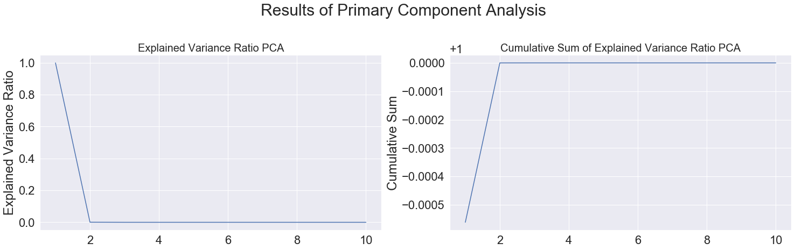
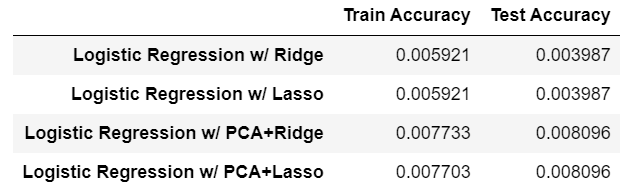
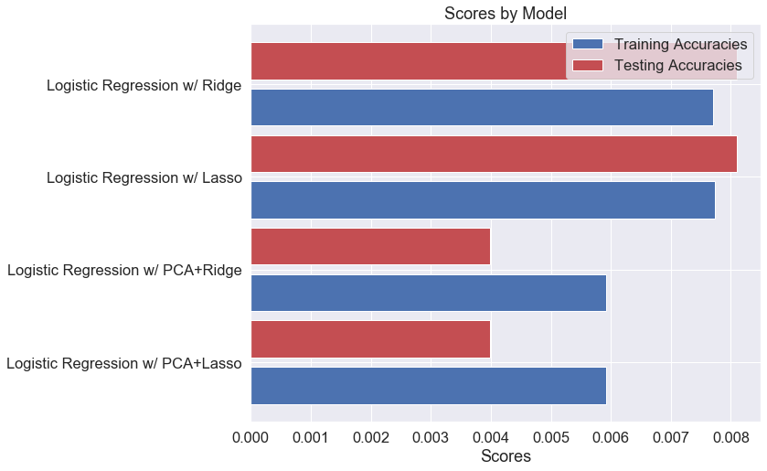
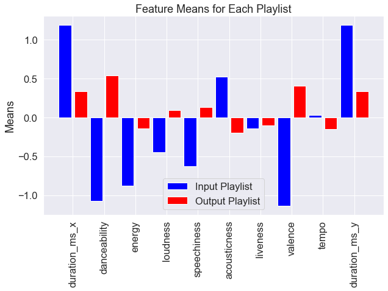

To create the Logistic Regression Model, only 41,379 songs or 604 playlists of the One Million Playlists were used for computational reasons.
Despite this being a small portion of the total dataset, this sample size was sufficiently large enough to analyze and draw conclusions from.
When creating this model, multiple factors were considered to change it. This included changing types of regularization methods (Lasso vs Ridge)
and the number of features present (PCA vs non-PCA).
The portrayed approach with this model attempts to predict a playlist ID given a list of playlist IDs. The idea was that training the model on
features such as duration, danceability, energy, key, loudness, mode, speechiness, acousticness, instrumentalness, liveness, valence, tempo, and time
signature could potentially add power to the model so that it could predict accordingly. In theory, training a model to classify playlists based on inputs
such as their measured levels of duration, danceability, energy, and tempo would allow it to predict what class of playlist it falls into and could,
therefore, suggest a playlist that is similar. However, even with a small subset of the data, it was still a difficult idea to implement given the large
number of playlists. while the multi-class classification held in theory, this data was quite complicated for this approach to be successfully applied in
practice. As the results will show, it was possible to train and fit numerous logistic regression models but the accuracies associated with it were quite
low. These results had not only to do with the approach taken, but also with the use of some variables that had skewed or otherwise not Normally distributed
distributions. These distributions likely contributed significantly to the low accuracy of the models.
For the logistic regression models, the data were split into train and test sets with a test size of 20% . All the quantitatice predictors were included
and playlist ID was made to be the response variable. Even after splitting the data, it took quite some time to train the models. Training with Ridge
regularization (penalty=l2) took approximately 30 minutes and training with Lasso regularization (penalty=l2) took nearly an hour. Even with ten of the predictors,
the training and test scores were quite low. This was likely a result of the numerous playlists, or classes, that had to be predicted as well as the distributions
of some of the predictors as mentioned previously.
Because of the large size of the dataset, we also thought it would be a good idea to reduce the dimensionality of the dataset via Primary Component Analysis
(PCA) for easier model training. Of course, there was some loss of knowledge as is typical of PCA. However, even with reduced dimensionality, it still took some time
to run - the model with Ridge took over an hour to run while the model with Lasso took nearly two. Instantiating a PCA transformer with the minimum number of components
showed that nearly all of the data could be explained by just two primary components, as shown by the figures with the Explained Variance. This, again, was not very
surprising given the distributions of the predictors. Therefore, we used 2 primary components to train two more Logistic models. The graph below displays these results.
They are visualized in the figure below:

Find below the results of the four logistic regression model. Interstingly, there was not much improvement between using Lasso and Ridge. Therefore, we cannot
definitively say that one form or regularization is better than the other in this situtaiton. Due to the loss of information that typically happens during PCA, it is
not surprisng that the results for the model based of this method were lower. The results are summarized in a table and visualized in the graph below:


Although the models had low accuracy scores, it was worth trying to see if it could predict a playlist. To predict a playlist, the Logistic Regression model
with Ridge penalty was used. First, a playlist ID was randomly chosen from the subset of playlists. Then, each song received its own recommendation for what playlist
it could also belong to. After creating recommendations for each song, the playlist that was recommended the most was the resulting predicted playlist. The idea behind
this approach was to see whether the model would differentiate between the songs even though they were in the same playlist. Because of the structure of the model, the
same playlist was actually recommended for each song. This is likely due to the underfitting seen in the model.
Unsurprisingly, given the low accuracy scores, the recommended playlist was not all that similar to the randomly chosen playlist. The input playlist, which seems
to be a compilation of Christian Rock songs (judging by the names) is not very similar to the predicted playlist which seems to be mostly R&B and rap songs. This can be
easily seen by the means of their features which are portrayed in the bar graph below.
The means are quite different from each other, particularly the differences between danceability, loudness, speechiness, acousticness, valence, and tempo. Even
among the predictors where the means are both positive, there is still quite a difference in magnitudes.

As the results show, this approach needs much tweaking in order to create more powerful and accurate models. The main issue with using playlist ID as the response
variable was that there were far too many "classes" for the Logistic Model to learn. Therefore, it is likely that the model took so long to train not only because there
were so much data, but also because there were just as many classes. Each playlist was slightly different and the model could not properly predict similar ones as a result.
The proposed solution to this would be to simply reduce the number of classes. The playlists that are similar to each other could easily be identified by labeled
classes. One way to do this could be to measure all the means of all the features in each playlist. Playlists whose differences in these feature means are under a certain
threshold would be a part of the same class. For example, the mean difference in danceability between the two playlists has an absolute value of about 1.6. Therefore, they
are clearly from different classes. A playlist that is similar to the Christian Rock playlist would likely result in a difference that would be much lower than this.
Figuring out which playlists have small differences between each other would be the approach in creating these classes. Once these classes are created, they could
be assigned to each playlist or song and then this would become the response variable for the model. The job for the model would then be to analyze the means of the features
of an input playlist and find a class in which the means would not be far off from the means found in the class.
Overall, because of the large number of playlists, the multiclass problem seemed to make the most sense. To predict a playlist after being given an example playlist,
it is necessary to predict which class this playlist could belong to. This method is an attempt to do this, but there are too many classes for it to be successful. One issue
is the number of playlists which made PCA a clear option to test. Due to the fact that PCA results in loss of information because of the high dimensionality of the orignal dataset,
it proved to give much lower results when comparing accuracies. Interestingly, Lasso regularization did not improve scores by very much when in either the PCA or the non-PCA data.
Given these very small values, it is clear that these models are underfitting the data, especially considering that there are a million playlists in the original datasets. These values
could be improved by reducing the number of classes using the method previously described.
Due to the extensive amount of time that it took to train the shown models, it was not possible to make further comparisons with cross-validation. Using cross-validation along
with implementing the new method of class creation would be the next steps in improving the Logistic Regression model to predict playlists.
Notebook: LogisticReg.ipynb